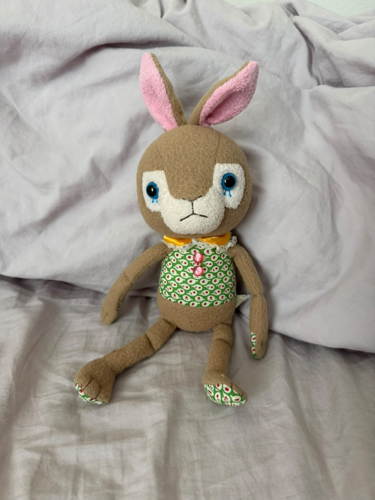

I partnered with my classmate Piper, and she shared with me a picture of a butterfly. It is a puple butterfly perched on her hand. The image is supposed to be about the different bugs she interacts with through out her life, which turns out to be a lot. The most interesting part of the image would have to be the color of the butterfly it is bold and the center focus of the image. The obvious would be the beautiful butterfly resting momentarily on a hand, likely outdoors on a sunny day. The mysterious would be the story behind the encounter, was this a chance meeting? Is there emotional significance to the moment? The only suggestion I would have is maybe take these pictures at different times of day to show or give the impression that her interacting with these bugs is something that is happening through out her day.
Emily 2025
The image I am most excited about is my rabbit plush! This image is interesting because this is my favorite thing in my bag, I keep its head sticking out at all times so all can see it. This image relates to me archive as it is just one of the many things that I carry in my bag. My archival shows what I carry on my person everyday, what it is important enough to me to carry with me everywhere. There is a saying that you can tell a lot about a person by what they carry in their bag and I believe thats true. I'd like to remove the backgrounds on all my images so I can maybe photoshop them to be inside my bag peeking out for the users to interact with.
Entry 3
I found the NYT article real interesting, I never realized how much you can “read” a photo like a story. The questions they suggest really make you slow down and notice details you’d normally miss. It’s such a fun and different way to practice critical thinking without feeling like you’re doing typical schoolwork. The website I chose to practice these techiques with was Bob Snail.It is extremly coloful and eye catching, so I was drawn to it fast. This website is letting the viewer observe, with the product imaages that are plain to see, and askes questions; "what is this?". Overall a visually appealing website that had me curious about what it was selling.
Entry 2
I really liked this article on best practices for modals and overlays, it made me think differently about how these little pop-ups affect the user experience. The main takeaway was that modals should only show up when they really need to, like when something needs your full attention. I also appreciated the reminder that users should always have an easy way out, whether it’s an “X” button, hitting Escape, or just clicking outside the box. The point about not stacking multiple modals made me laugh a little, it’s so true, that just gets messy fast. I also liked how it covered accessibility and mobile design; it’s easy to forget that not everyone experiences modals the same way. Overall, super helpful read!
Entry 1
I read the article “Best practices for form design” on UX Collective, and it made me realize how much thought actually goes into something as simple as filling out a form. The author breaks down a bunch of small but important details like keeping forms short, sticking to a single column layout, and giving users clear feedback when they make a mistake. One part that stood out to me was how the order of questions can affect a user’s flow. Starting with easy questions helps people feel more comfortable and keeps them moving forward. I also liked the reminder not to rely only on color for error messages, something that’s easy to overlook but super important for accessibility.
A website that I think shows these best practices really well is Spotify
. Their sign-up form feels modern and clean, colorful, and super easy to move through. The layout is simple, and the real-time feedback makes the whole process feel quick. It matches their brand’s energetic vibe while still being really user friendly.